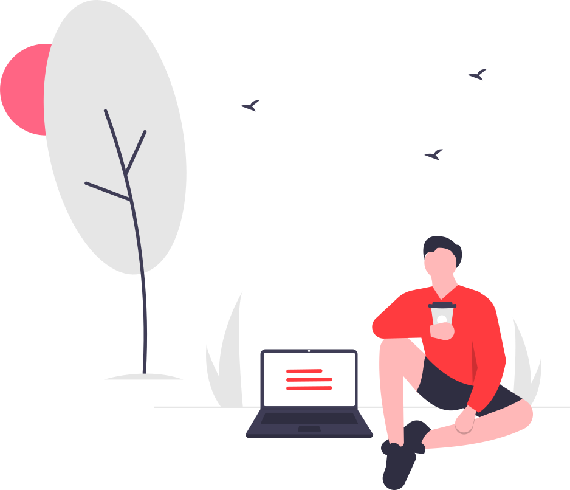
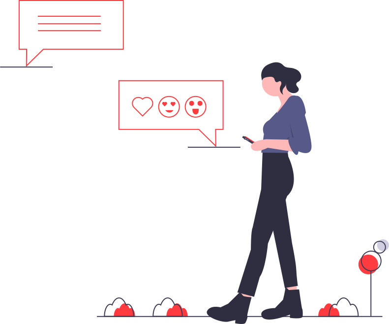

1993年生まれ。大阪府堺市在住。
2016年に神戸芸術工科大学を卒業。
その後、ホテルのフロントや旅行商品の造成、航空会社や代理店にて航空券手配業務を経験。
趣味は映画・海外ドラマ・ブロードウェイミュージカルの鑑賞、国内外への旅行。
旅行用のしおりが作成出来るサイトです。
途中からVue.jsでの作成に移行したため、キャプチャ動画のみの公開になります。
使用言語：HTML/SASS/JavaScript
旅行用のしおりが作成出来るサイトです。
現在作成中のため、公開までもうしばらくお待ちください。
使用言語：HTML/SASS/Vue.js